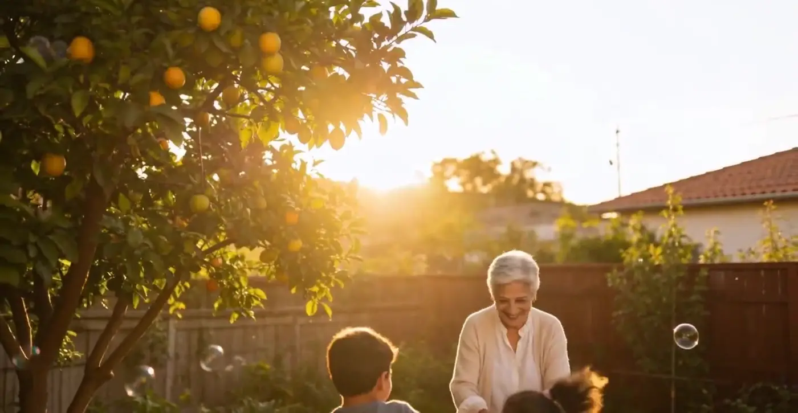
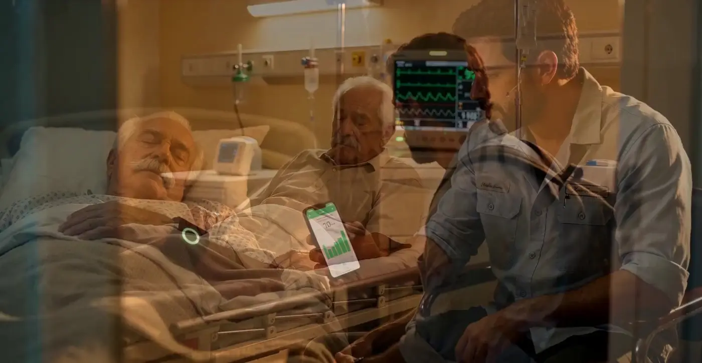
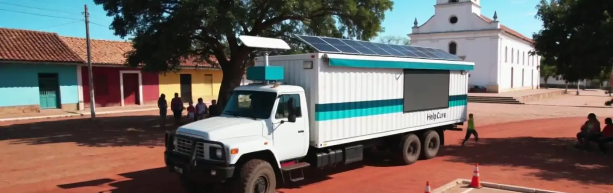

Soluções / Home care
O cuidado não termina na alta.
Em casa, o paciente continua monitorado. O médico recebe as medições com a indicação de estabilidade e a família fica tranquila.
Monitoramento contínuo, sem sair de casa.
Kit em casa
Um celular Android como base, pulseira ou relógio e, se quiser, um assistente de voz para os lembretes.
Leituras diárias
Os sinais vão para a central sem o paciente precisar digitar.
Alerta e ação
Se algo foge do padrão, a central avisa a equipe de home care, o médico e a família.
O que muda depois da alta.
- Estabilidade visível — O médico vê há quanto tempo o paciente está estável, sem visita.
- Menos reinternação — Sinais de piora aparecem cedo, enquanto ainda dá para agir em casa.
- Lembretes por voz — Para quem tem dificuldade com o celular, os lembretes podem ser falados.
- Equipe de home care — Visitas planejadas pelos dados, não só pelo calendário.


Para quem cuida em casa.
Empresas de home care
Mais pacientes acompanhados com a mesma equipe.
Hospitais
Alta com segurança e continuidade do cuidado.
Famílias
Tranquilidade para quem mora longe.
Tudo ligado ao mesmo histórico.
Paciente e família
App, lembretes de remédio e resumo de emergência no bolso.
Saiba mais →
Hospital e clínica
Sinais vitais direto no sistema e a família informada.
Saiba mais →
Farmácia
Receita, dispensação e adesão ao tratamento no mesmo histórico.
Saiba mais →
Célula de atendimento
Sala de 9 m² com triagem e teleconsulta, onde as pessoas estão.
Saiba mais →
Unidade móvel
Triagem e duas cabines de teleconsulta sobre rodas.
Saiba mais →